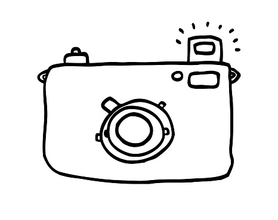

Hier gehts zurück auf die Startseite
Hier zu Über mich
Hier gehts zu meinem Kontakt
Ich bin sehr Organisiert und kann mir meine Aufgaben und meine Arbeit gut einteilen und habe somit immer einen guten Überblick auf das was ich schon erledigt habe und was ich noch machen muss. Ich kenne mich in vielen Bereichen gut aus und lerne gern etwas neues dazu oder vertiefe mein wissen.
 Ich möchte das Studium erfolgreich beenden und somit ins Berufsleben einsteigen. Die Themengebiete die mich am meisten Interessieren sind Marketing, Design und Fotografie . In mindestens eins dieser Bereiche möchte ich später einmal Arbeiten und mein Wissen stark erweitern.
Ich kenne mich gut im Thema Wirtschaft aus, da ich vor meinem Studium auf ein Wirtschafts/Kaufmännisches Berufskolleg gegangen bin und mir dort Betriebswirtschaftslehre gut legen hat. Durch meine gute Fähigkeit logisches Denken viel er mir leichter in Fächern in welchen man dies gut einsetzten konnte. Ebenfalls kenne ich mich gut mit Programmen wie
und ähnlichen aus. Auch die Englische sprache behersche ich durch die Schule und privaten Interesse.
 >
>